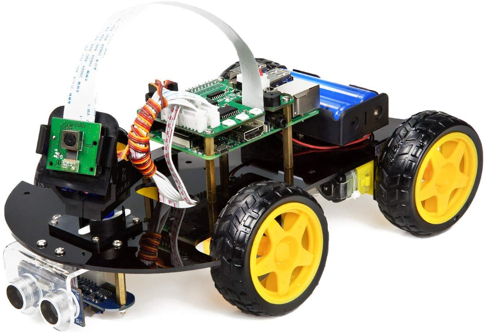

Building an Autonomous Robot to navigate through a model town (Ongoing)
January 2022 - Present

- Working on an intensive course project for the class ME597 - Autonomous Systems, which involves, building a 4-wheeled autonomous robot (as shown in the picture above), consisting of Ultrasonic Sensors, a Camera, and a Line Tracking Sensor
- Processing and handling of all sensor data will be done using a Raspberry Pi on the robot, running Ubuntu 20.04, using ROS and Python
Phase 1 - Robot Kinematics and Control#
- In this phase, I had to leverage the Line Tracking sensor and the Ultrasonic sensor on board the Autonomous Robot to implement a Line Tracking Module as well as a PID controller
- The PID controller used the distance in front of the robot to calculate the error from the setpoint, and calculated the output velocity to be sent to the DC motors by using carefully tuned proportional, integral and derivative gains to minimize overshoot and Steady State Error
- I also learned more about how to calculate forward and inverse kinematics for mobile robots with different wheel configurations, eg: Mecanum wheeled Robot
Phase 2 - Robot Perception#
- This phase involved the simulation of a Turtlebot to track and chase a red ball in the Gazebo environment. Data from the camera was read, and processed using openCV (Image Masking, Canny Edge Detection). This data was then used to calculate the centroid of the ball by drawing contours around it
- The robot was then programmed to follow the ball with a constant linear velocity if the ball is in it’s POV or else rotate until it is visible
- These principles were then used on the actual 4 wheeled Robot, where the Raspberry Pi camera module was calibrated with a Fiducial. After calibration, the robot was then programmed to calculate the Eulerian distance to the Fiducial, and move towards it, parking at a specified distance away from the Fiducial.
Phase 3 - SLAM, Trajectory Optimization (Upcoming)#
- Upcoming work involves implementing the $A^*$ algorithm for optimizing the trajectory in a given environment map
- The robot will then use SLAM (Simulateneous Localization and Mapping) principles to follow said path, while avoiding collisions with the environment